Step 1
It starts with a star
- Catch a shooting star. Shooting stars cross the night sky every few seconds. Tap the screen, or press any button, while one is flying.
- Watch it land. The star falls onto the meadow and pulses for about 30 seconds, faster and faster.
- Meet your baby. The star bursts and your baby appears in its room. Give it a name.
Tip: babies are born hungry and unhappy, so feed it and give it a snack straight away.
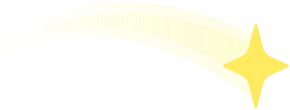
How time works
One day is three years
years every morning
Your tomomix gets 3 years older each time it wakes up. There's no age limit.
It grows while awake
Growing up only counts the time it's awake. Each character has its own bedtime and wake-up time, and sleeps through the night.
Life goes on when you leave
Time keeps passing while the app is closed, and notifications tell you when it needs you. Need a break? Pause freezes its life.
19 characters
Four life stages
Every tomomix starts as the same baby. What happens next depends on how you care for it. The times below are awake time, so with sleep they stretch out a little.
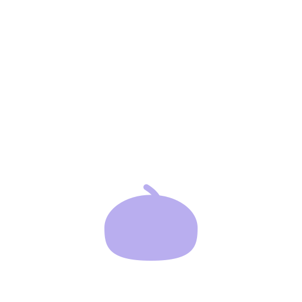
Baby 1
About 1 hour. It takes a short nap, and wakes up 3 years old.
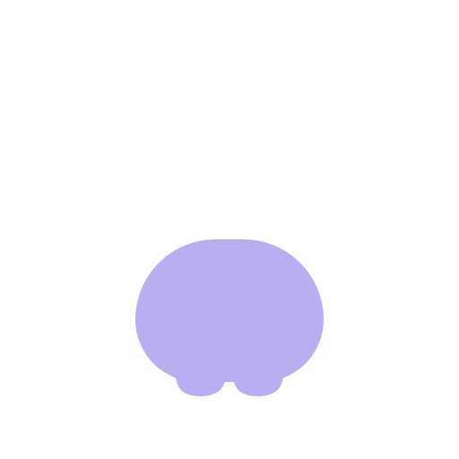
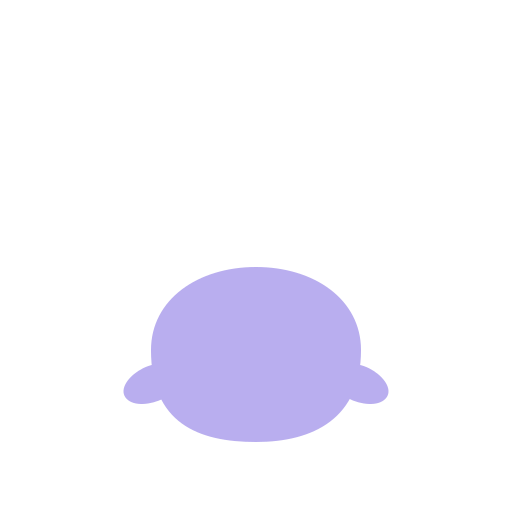
Child 2
About 2 days. Its very first hour decides which child you get.
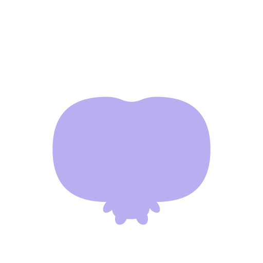
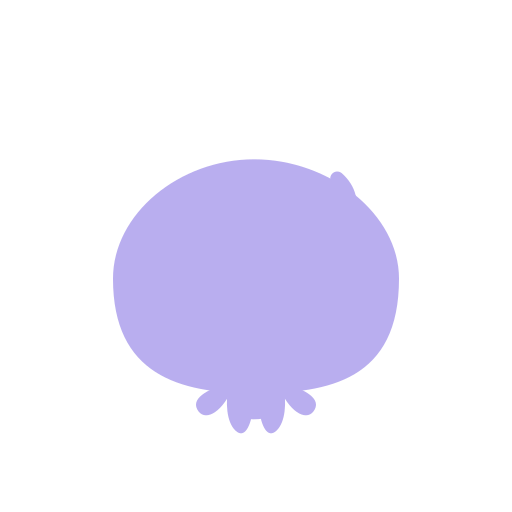
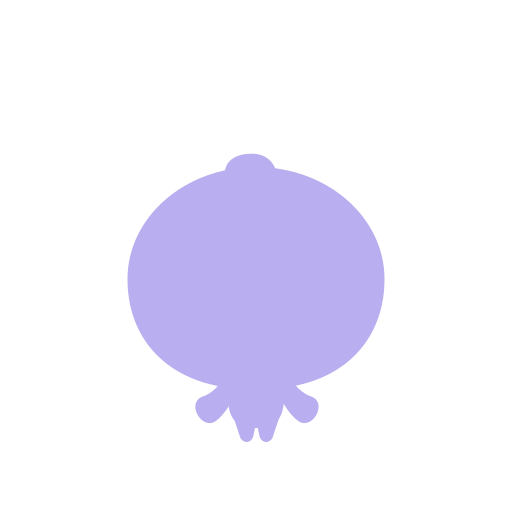
Teen 3
About 2 to 3 days. Each teen points toward a different group of adults.
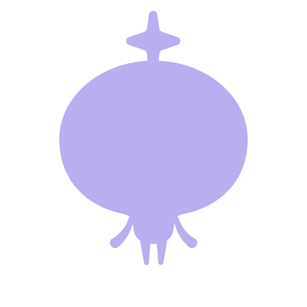
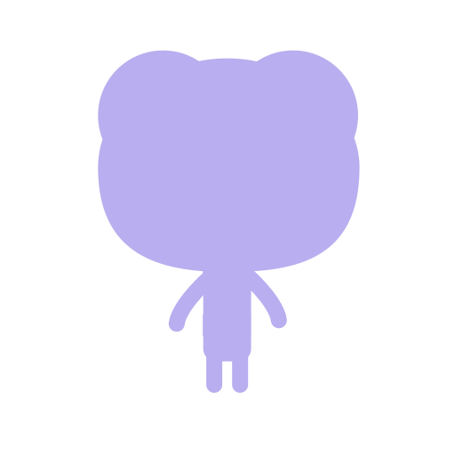
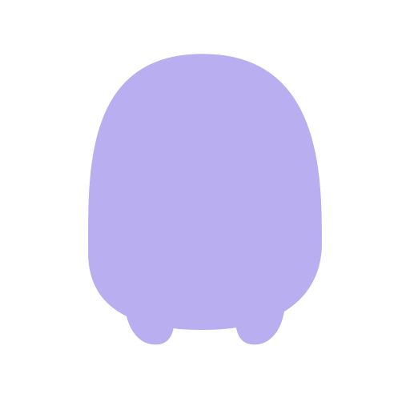
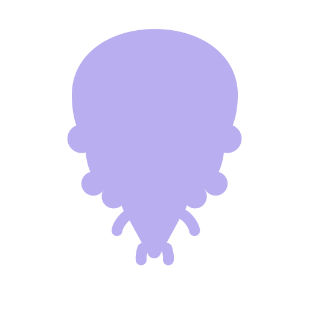
Adult 12
The rest of its life. Some adults live for days, some for weeks. Who will yours be?
Peek at all 18 silhouettes
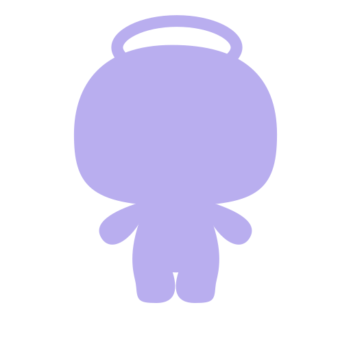
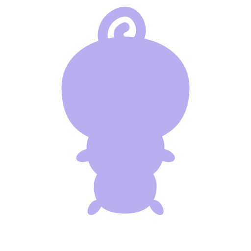
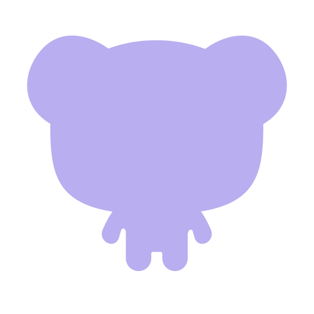
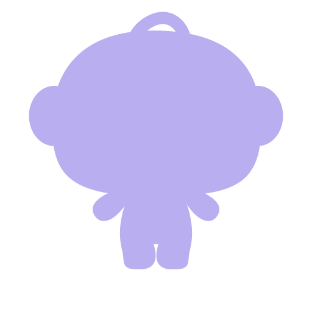
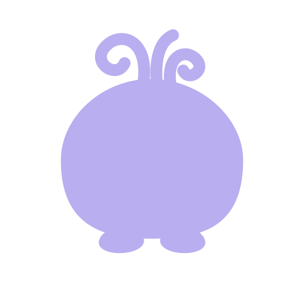
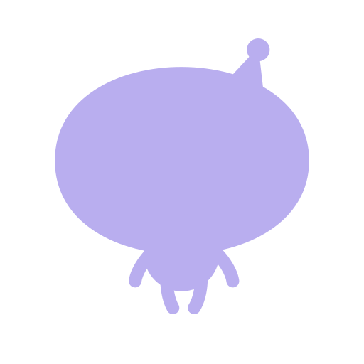
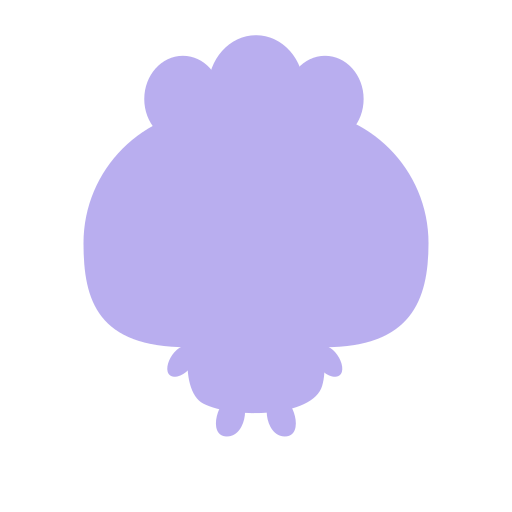
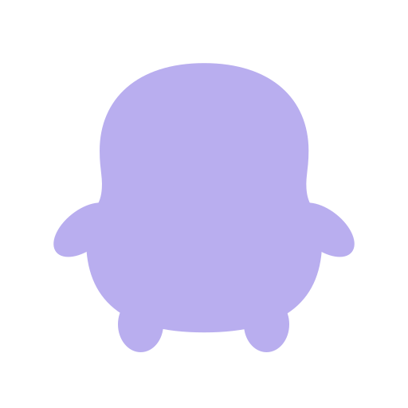
Daily care
Eight icons, one happy friend
Press A to move between icons, B to choose and C to go back. Or just tap an icon. Both work the same way, so use whichever you like.
Food
A meal fills one step of hunger. A snack fills one step of happiness, but adds more weight.
Light
Turn it off once your tomomix has fallen asleep. It comes back on by itself in the morning.
Game
Play Follow Me to raise happiness and burn off a little weight.
Medicine
Cures sickness. Some characters need two or three doses.
Clean
Sweeps away all the poop at once.
Status
Shows its name, age, weight, and its hunger, happiness and discipline meters.
Discipline
Use it when your tomomix misbehaves. Only use it then, though!
Attention
Lights up by itself when your tomomix is calling you. You can't select it.
Hunger and happiness
Each meter has 4 steps and slowly empties on its own. When a meter is almost empty, a thought bubble shows what it'll want soon.
Answer its calls
When a meter runs out, your tomomix calls you. Answer within 14 minutes. If it falls asleep with the light on, turn it off within about an hour.
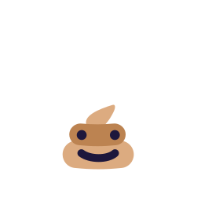
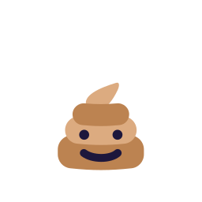
Poop
A little pile appears every few hours, up to 8. The more poop is lying around, the sooner your tomomix gets sick.
Sickness
A scribble beside its head means it's sick. Give it medicine soon. Getting sick too often is dangerous.
Misbehaving
Sometimes it calls when it doesn't need anything, or refuses food or games. That's misbehavior: discipline it. Ten scolds fill the meter, and then it behaves.
Indoors and out
Press B with no icon chosen, or tap anywhere else on the screen, to go out to the meadow and back. It always sleeps indoors.
Mini-game
Follow Me
A memory game. Your tomomix looks left or right, and you repeat what it did.
- Each round repeats the last sequence and adds one more direction, up to 5 rounds.
- Answer with A = left and B = right, or tap the left or right side of the screen. C quits.
- A wrong direction ends the game. So does waiting more than 5 seconds.
| Rounds completed | Happiness |
|---|---|
| All 5 | ♥♥♥ +3 steps |
| 3 or 4 | ♥♥ +2 steps |
| 1 or 2 | ♥ +1 step |
| None | Nothing this time |
Every finished game also takes off a little weight.
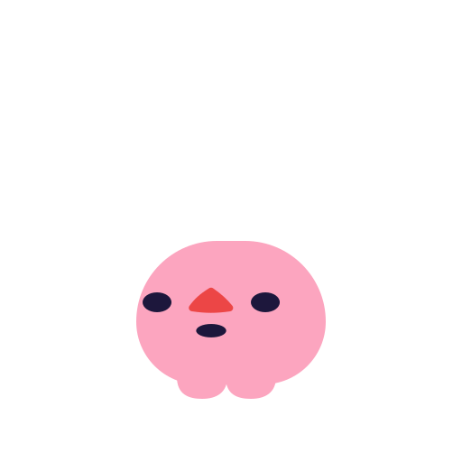
Who it becomes
Your care shapes it
Growing up is never random. Two things decide who your tomomix becomes, and both stay with it for life.
💛 Answering its calls
Each call you miss, and each night you leave the light on, counts as a care mistake. Fewer mistakes lead to the best teen, and that teen leads to the best group of adults. A rough start isn't final: a child from a bumpy first hour can still become the best teen.
🧠 Disciplining it
Each time you let misbehavior slide for too long, it remembers. Within its group, this decides which of the four adults it becomes, and how well behaved it is when it gets there.
Things that don't change who it becomes: its weight, how often you play, and how quickly you tidy up. Those matter for its health and happiness instead.
The ending
A star in the sky
Every adult grows old in time. Old tomomixis get hungry and sad more and more quickly, so they need extra care.
A life can also end early: if a meter stays empty for about half a day, if sickness goes untreated for hours, or if it gets sick too many times as the same character.
When a tomomix departs, it becomes a fixed star in the night sky, with its name and age. Tap twice to send a new shooting star and start again.
Your pace
Make it fit your day
Difficulty
Easy gives you 1.5× more time for everything. Classic is the standard game. Hard gives you less time.
No Deaths
Turn it on and your tomomix's life never ends. Neglect makes it sick instead.
Pause
Freezes its life: no aging, hunger or poop. When you come back, everything picks up where it stopped.
Sound
Press A + C together to mute it. Calls still show on screen.
Notifications
Get a message when it's hungry, unhappy, sick or ready for bed, even when the app is closed.
Retro Screen
Big pixels and scan lines, for an old-school look.
Classic pets, too
Tomomix can also run supported classic virtual pets from a compatible software file. Classic toy software is not included. Only import files you have the right to use.
Feature availability varies by classic model. See Support for the list.
Free, with optional Premium
Free: one tomomix with every feature of the game, plus one classic pet.
Premium (one-time): more classic pets, Live Translation (beta), Ambient Background, fast-forward, photos and videos for classic pets, widgets, and points tools for supported models.